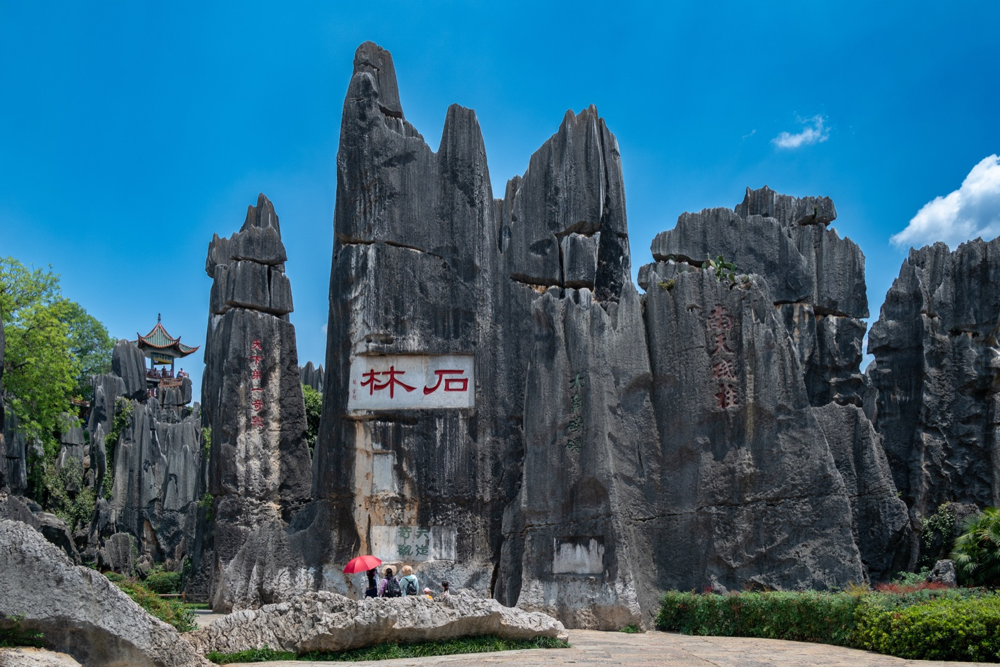
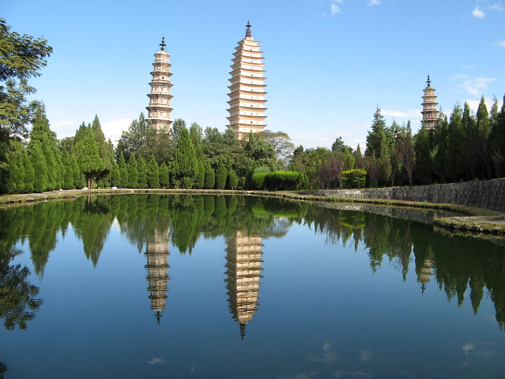
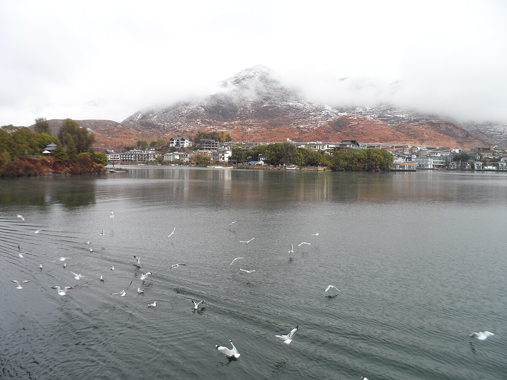
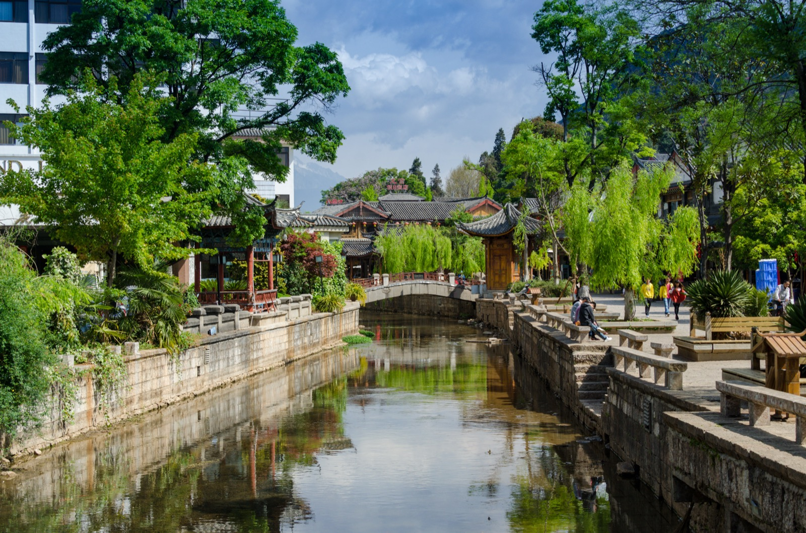
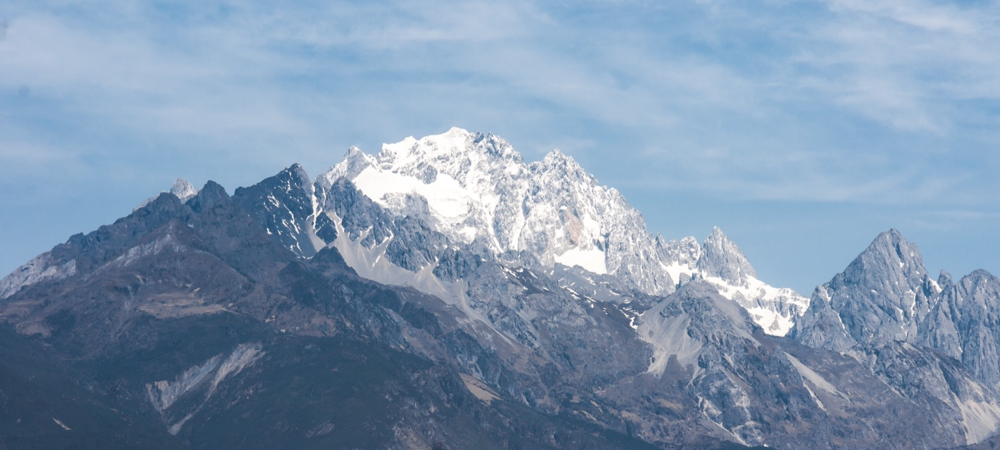
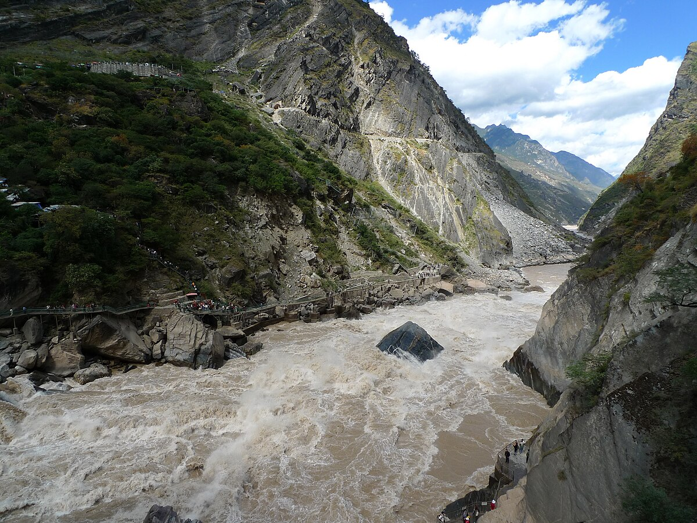
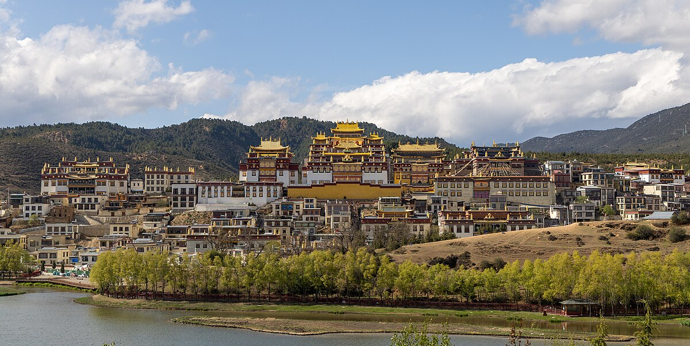
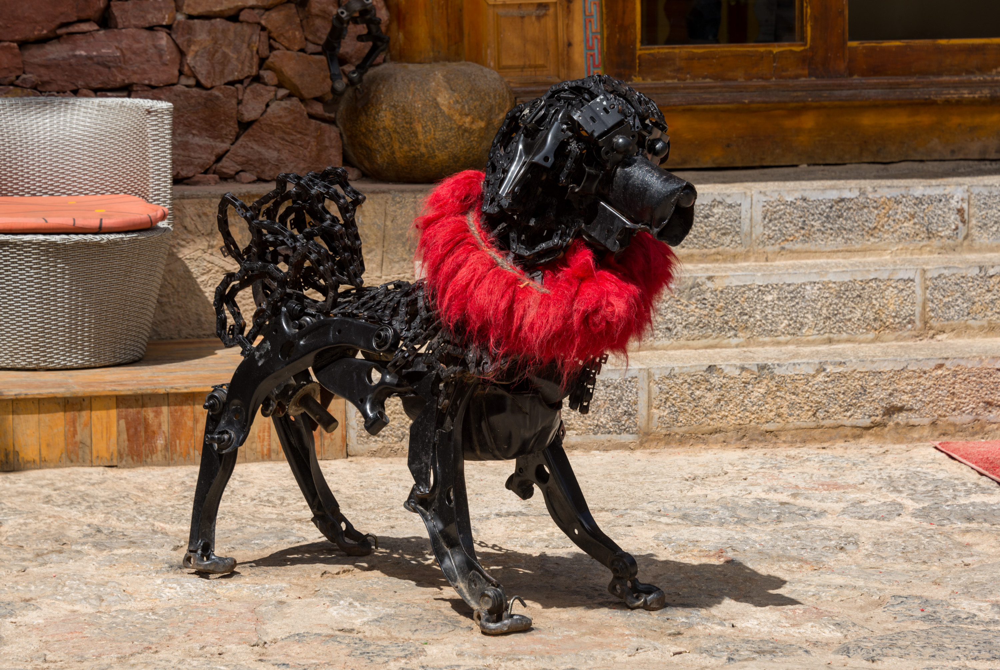
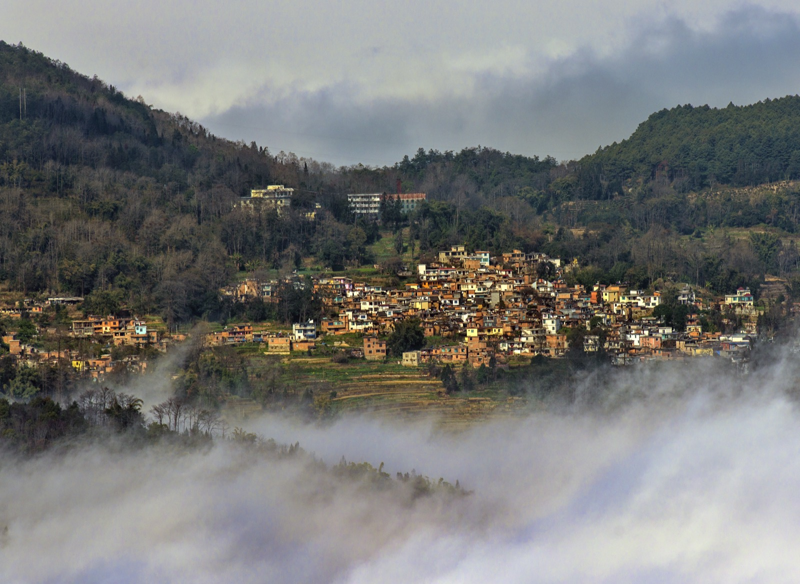

Official Recommended Destinations of Yunnan Province
Yunnan Province, located in the southwestern frontier of the People's Republic of China, encompasses an area of approximately 394,000 square kilometers and is home to 25 of China's 56 officially recognized ethnic minority groups. The province spans elevations from 76 meters in the river valleys of the southeast to 6,740 meters at the summit of Kawagebo Peak in the northwest. This guide presents six officially recommended destinations selected on the basis of cultural significance, natural heritage value, tourism infrastructure readiness, and visitor satisfaction indices.
Kunming & Stone Forest
Kunming, the provincial capital of Yunnan, serves as the principal gateway for tourism throughout the region. Known as the "Spring City" for its temperate year-round climate, Kunming is situated on the northern shore of Dianchi Lake at an elevation of approximately 1,891 meters above sea level. The city functions as the administrative, economic, and transportation hub of Yunnan Province.
The Stone Forest (Shilin), located approximately 85 kilometers southeast of Kunming, was inscribed as a UNESCO World Heritage Site in 2007 as part of the South China Karst serial nomination. The site encompasses 350 square kilometers of Permian-age limestone formations dating back approximately 270 million years. These karst pinnacles, formed through prolonged dissolution and erosion, represent one of the most remarkable examples of stone forest landscape on Earth and hold considerable significance for the study of geological processes.

| Elevation | 1,891 m (Kunming) / 1,750 m (Stone Forest) |
|---|---|
| Best Time to Visit | March through October (year-round viable) |
| Entry Fee Range | CNY 130 – 175 (Stone Forest scenic area) |
| Recommended Duration | 2 – 3 days (Kunming and Stone Forest combined) |
| UNESCO Status | World Heritage Site (South China Karst, 2007) |
| Annual Visitors | Approximately 4.5 million |
Key Attractions
- Stone Forest Major Scenic Area — principal viewing circuit of karst pinnacles
- Naigu Stone Forest — secondary site with black-colored limestone formations
- Dianchi Lake — sixth-largest freshwater lake in China, 300 sq km
- Western Hills (Xishan) — forested hills overlooking Dianchi Lake with Dragon Gate temple complex
- Kunming Green Lake Park (Cuihu) — migratory black-headed gull habitat (November to March)
- Yunnan Provincial Museum — comprehensive collection of Dian Kingdom bronze artifacts
Cultural Significance
The Stone Forest holds deep cultural importance for the Sani people, a branch of the Yi ethnic group, who have inhabited the surrounding area for centuries. According to Sani oral tradition, the stone pillars are the petrified remains of a great flood. The annual Torch Festival, held in the Stone Forest each June, is among the most significant cultural events in the Yi calendar. Kunming itself reflects the multiethnic character of Yunnan, with notable Hui Muslim, Yi, and Bai communities contributing to the city's cultural landscape.
Dali
Dali, the seat of the Dali Bai Autonomous Prefecture, served as the capital of the Nanzhao Kingdom (738–902 CE) and the subsequent Dali Kingdom (937–1253 CE), both of which exercised dominion over much of present-day Yunnan and portions of mainland Southeast Asia. The city's historical significance as a center of political power, Buddhist learning, and interregional trade along the Southern Silk Road (known as the Tea Horse Road) renders it one of the most culturally significant destinations in southwestern China.
The Dali Old Town, encircled by remnants of Ming Dynasty walls, is situated between the Cangshan mountain range to the west and Erhai Lake to the east. This geographic setting, combined with the well-preserved architectural heritage of the Bai people, provides an exceptional environment for the study of traditional Chinese vernacular architecture and minority cultural practices.


| Elevation | 1,975 m (Dali Old Town) |
|---|---|
| Best Time to Visit | March through May; September through November |
| Entry Fee Range | CNY 75 – 121 (Three Pagodas); free (Old Town) |
| Recommended Duration | 2 – 4 days |
| Prefecture | Dali Bai Autonomous Prefecture |
| Primary Ethnic Group | Bai (approximately 33% of prefecture population) |
Key Attractions
- Three Pagodas of Chongsheng Temple — Tang Dynasty (9th century), tallest pagoda 69.13 m
- Dali Old Town — Ming Dynasty walls, traditional Bai courtyard architecture
- Erhai Lake — second-largest highland lake in Yunnan, 256 sq km
- Cangshan Mountains — 19 peaks exceeding 3,500 m, alpine meadow ecosystems
- Xizhou Village — finest examples of Bai residential architecture
- Shuanglang Peninsula — lakeside Bai fishing village with preserved traditional character
- Butterfly Spring (Hudiequan) — natural spring of cultural significance to the Bai people
Cultural Significance
Dali's cultural heritage is inseparable from the Bai ethnic group, whose distinct architectural traditions, textile arts (particularly tie-dye, known locally as zharan), silverwork, and religious practices blending Benzhu folk religion with Mahayana Buddhism constitute an irreplaceable component of China's intangible cultural heritage. The annual March Fair (Sanyue Jie), held since the Nanzhao period, remains one of the largest traditional trade gatherings in southwestern China and has been designated a National Intangible Cultural Heritage event.
Lijiang
The Old Town of Lijiang was inscribed on the UNESCO World Heritage List in 1997 in recognition of its outstanding preservation of a historic townscape that reflects the fusion of elements from several cultures over many centuries. Unlike most ancient Chinese cities, Lijiang was constructed without surrounding walls, reflecting the open governance philosophy of the Mu family, hereditary Naxi chieftains who administered the region under the tusi system for over 400 years.
Lijiang occupies a strategic position at the junction of the Tibetan Plateau and the Yunnan-Guizhou Plateau, at an elevation of 2,416 meters. The city's intricate network of canals, stone bridges, and timber-framed buildings represents a unique synthesis of Han Chinese, Tibetan, and Bai architectural influences adapted to the particular needs and aesthetic sensibility of the Naxi people.


| Elevation | 2,416 m (Old Town) |
|---|---|
| Best Time to Visit | April through May; September through October |
| Entry Fee Range | CNY 40 (Old Town maintenance fee); CNY 100 – 180 (Jade Dragon Snow Mountain) |
| Recommended Duration | 3 – 5 days (including surrounding attractions) |
| UNESCO Status | World Heritage Site (Old Town of Lijiang, 1997) |
| Distinctive Heritage | Naxi Dongba pictographic writing system |
Key Attractions
- Lijiang Old Town (Dayan) — UNESCO-listed historic townscape with canal network
- Jade Dragon Snow Mountain — glaciated peak at 5,596 m, cable car access to 4,506 m
- Black Dragon Pool (Heilongtan) — iconic reflecting pool with mountain backdrop
- Mu Family Mansion (Mufu) — restored tusi administrative complex
- Baisha Village — Naxi cultural center with Ming Dynasty frescoes
- Shuhe Ancient Town — secondary heritage settlement on the Tea Horse Road
- Dongba Culture Museum — repository of Naxi pictographic manuscripts
Cultural Significance
Lijiang's foremost cultural distinction lies in the preservation of Naxi civilization, particularly the Dongba pictographic writing system, recognized as the only living pictographic script in the world. The Dongba tradition, maintained by ritual specialists, encompasses an extensive corpus of religious texts, cosmological narratives, and ceremonial procedures. The Naxi ancient music tradition, featuring instruments and compositions dating to the Song and Tang dynasties, has been designated a National Intangible Cultural Heritage and is performed nightly in the Old Town. Lijiang's designation as a World Heritage Site has prompted significant investment in cultural preservation programs administered jointly by provincial and municipal authorities.
Tiger Leaping Gorge
Tiger Leaping Gorge (Hutiao Xia), designated a National Scenic Area, is one of the deepest river gorges in the world, with a maximum depth of approximately 3,790 meters measured from the river surface to the summit of Jade Dragon Snow Mountain. The gorge extends for 15 kilometers along the Jinsha River (the upper Yangtze) between Jade Dragon Snow Mountain (5,596 m) to the south and Haba Snow Mountain (5,396 m) to the north.
The gorge holds considerable geological significance as a product of the collision between the Indian and Eurasian tectonic plates, which initiated the uplift of the Tibetan Plateau and the concurrent incision of deep river valleys throughout the region. The area forms part of the Three Parallel Rivers of Yunnan Protected Areas, a UNESCO World Heritage Site inscribed in 2003.

| Elevation | 1,800 m (river level) to 5,596 m (Jade Dragon summit) |
|---|---|
| Best Time to Visit | April through June; September through November |
| Entry Fee Range | CNY 45 – 65 |
| Recommended Duration | 1 – 2 days (high trail trek: 2 days) |
| Trail Length | Approximately 22 km (high trail) |
| Difficulty Level | Moderate to Strenuous |
Key Attractions
- Upper Tiger Leaping Gorge — most accessible viewing point, tiger leaping stone
- High Trail — 22 km trekking route along the gorge rim with panoramic views
- Middle Tiger Leaping Gorge — most dramatic rapids, steep descent trail
- Haba Snow Mountain base area — alpine scenery and Naxi village settlements
- Walnut Garden (Hetaoyuan) — traditional Naxi village, midpoint rest stop on high trail
Cultural Significance
The gorge derives its name from a local legend in which a tiger, pursued by a hunter, leaped across the narrowest point of the gorge (approximately 25 meters) using a midstream boulder as a stepping stone. The Naxi and Tibetan communities inhabiting the gorge rim have maintained traditional agricultural practices on precipitous terraced slopes for centuries. The area's designation within the Three Parallel Rivers UNESCO site recognizes the broader region's exceptional biodiversity, which includes over 6,000 plant species and numerous endemic animal species across elevational gradients spanning subtropical to alpine zones.
Shangri-La
Shangri-La (formerly Zhongdian), the capital of Diqing Tibetan Autonomous Prefecture, is situated on the southeastern edge of the Tibetan Plateau at an elevation of 3,160 meters. The city and its surrounding prefecture represent the southernmost extent of culturally Tibetan territory in China and serve as the primary destination for visitors seeking to experience Tibetan religious heritage, pastoral culture, and high-altitude landscapes within Yunnan Province.
The prefecture encompasses a transitional zone between the Tibetan Plateau and the Hengduan Mountains, resulting in extraordinary ecological diversity ranging from subtropical forest in the valley floors to alpine tundra above 4,500 meters. Diqing Prefecture is home to Tibetan, Lisu, Naxi, and Yi communities whose coexistence over centuries has produced a distinctive multicultural character unique to this border region.


| Elevation | 3,160 m (city center) |
|---|---|
| Best Time to Visit | May through July; September through October |
| Entry Fee Range | CNY 90 – 115 (Songzanlin Monastery); CNY 100 – 138 (Potatso National Park) |
| Recommended Duration | 3 – 4 days |
| Prefecture | Diqing Tibetan Autonomous Prefecture |
| Altitude Advisory | Altitude sickness possible; acclimatization recommended |
Key Attractions
- Songzanlin Monastery (Ganden Sumtseling) — Gelug school, founded 1679 by the Fifth Dalai Lama
- Dukezong Old Town — 1,300-year-old Tibetan trading town, rebuilt after 2014 fire
- Potatso (Pudacuo) National Park — China's first national park, alpine lakes and meadows
- Napa Lake (Napahai) — seasonal wetland, black-necked crane wintering habitat
- Balagezong Grand Canyon — deep gorge with Tibetan village at 3,000 m
- Giant Prayer Wheel — world's largest prayer wheel, Dukezong hilltop, 21 m tall
Cultural Significance
Shangri-La occupies a singular position in the cultural geography of China as the meeting point of Tibetan, Naxi, and Han civilizations. Songzanlin Monastery, often called the "Little Potala Palace," serves as the spiritual center for approximately 130,000 Tibetan inhabitants of Diqing Prefecture and houses an important collection of Tibetan Buddhist scriptures, thangka paintings, and ritual objects. The Tea Horse Road (Cha Ma Gu Dao), the ancient trade route linking Yunnan's tea-producing regions with Tibet, passed through Dukezong, and the town's architecture and cultural practices reflect centuries of cross-cultural exchange facilitated by this commerce. Visitors are advised to observe respectful behavior at religious sites and to follow posted guidelines regarding photography and circumambulation protocol.
Yuanyang Rice Terraces
The Cultural Landscape of Honghe Hani Rice Terraces was inscribed on the UNESCO World Heritage List in 2013, recognizing the extraordinary terraced landscape created by the Hani people over a period of approximately 1,300 years. The terraces, carved into the southern slopes of the Ailao Mountains in Yuanyang County, extend from elevations of approximately 600 meters to over 1,800 meters and represent one of the most extensive and well-preserved examples of terraced rice agriculture in the world.
The Hani terrace system demonstrates an exceptional integration of ecological management across four vertical zones: forest at the summit, which captures and regulates water; villages situated below the forest canopy; terraces descending to the valley floor; and the river system at the base. This vertically organized agricultural system has been recognized by the Food and Agriculture Organization (FAO) as a Globally Important Agricultural Heritage System (GIAHS).

| Elevation | 600 m – 1,800 m (terrace range) |
|---|---|
| Best Time to Visit | November through March (terraces flooded with water) |
| Entry Fee Range | CNY 100 (multi-day scenic area pass) |
| Recommended Duration | 2 – 3 days |
| UNESCO Status | World Heritage Site (Cultural Landscape, 2013) |
| FAO Designation | Globally Important Agricultural Heritage System |
Key Attractions
- Duoyishu Terraces — premier sunrise viewing location, over 10,000 terraced plots
- Bada Terraces — most expansive single viewpoint, optimal at sunset
- Laohuzui (Tiger Mouth) Terraces — dramatic cascading formation
- Qingkou Hani Folk Village — traditional mushroom-shaped Hani dwellings
- Jianshui Ancient Town — nearby Ming-era town with Confucian temple
- Azheke Village — designated traditional Hani settlement within the heritage zone
Cultural Significance
The Yuanyang terraces embody the environmental philosophy and engineering achievements of the Hani people, whose ancestors migrated to the Ailao Mountains from the Tibetan Plateau over a millennium ago. The Hani social system, centered on the concept of balanced coexistence with the natural environment, governs water distribution, forest management, and agricultural scheduling through customary law administered by village elders. The annual Long Street Banquet (Changlong Yan), in which hundreds of tables are arranged in continuous lines through village streets, is the most prominent expression of Hani communal culture and has been designated a Provincial Intangible Cultural Heritage event. The terraces are a living cultural landscape, actively cultivated using traditional methods, and their continued function depends upon the maintenance of Hani cultural practices.
Yunnan Cuisine Guide
Yunnan cuisine (Dian cuisine) is distinguished by its extensive use of wild mushrooms, flowers, insects, and fermented ingredients, reflecting the province's extraordinary biodiversity and the culinary traditions of its 25 ethnic minority groups. The following items represent the most significant dishes and food products of the region, recommended for visitor sampling.
Signature Dishes
| Dish | Description | Region | Price Range (CNY) |
|---|---|---|---|
| Crossing-the-Bridge Rice Noodles (Guoqiao Mixian) | Signature Yunnan dish: rice noodles served with hot broth and fresh ingredients cooked tableside | Kunming / Provincial | 20 – 80 |
| Steam Pot Chicken (Qiguoji) | Chicken steamed in a specialized Jianshui clay pot, broth formed from condensation | Jianshui / Provincial | 60 – 150 |
| Wild Mushroom Hot Pot (Yesheng Junzi Huoguo) | Seasonal hot pot featuring 10–20 varieties of wild-foraged mushrooms | Provincial (June – September) | 80 – 200 |
| Erkuai (Rice Cake) | Dense rice cake grilled, stir-fried, or served in soup; staple carbohydrate of central Yunnan | Kunming / Dali | 10 – 30 |
| Rushan / Rubing (Dairy Products) | Bai ethnic dairy specialties: fan-shaped dried cheese (rushan) and fresh goat cheese (rubing) | Dali | 10 – 25 |
| Yak Butter Tea (Su You Cha) | Traditional Tibetan beverage of churned tea with yak butter and salt | Shangri-La / Diqing | 15 – 30 |
| Naxi Baba | Naxi-style flatbread, available in savory (scallion and cured meat) or sweet varieties | Lijiang | 5 – 15 |
| Pu'er Tea | Fermented tea produced in southern Yunnan; aged varieties considered investment-grade | Xishuangbanna / Pu'er | 30 – 500+ per cake |
Seasonal Advisory
Wild mushroom season in Yunnan extends from June through September, coinciding with the monsoon period. During this season, markets throughout the province offer dozens of varieties of wild-foraged fungi, including matsutake (songkong), porcini (niuganjun), and chanterelles (jiyou jun). Visitors are strongly advised to consume wild mushrooms only at established restaurants and never to purchase or prepare unidentified specimens independently due to the risk of toxic species.
Visitor Information
Transportation Between Destinations
| Route | Mode | Duration | Approximate Cost (CNY) |
|---|---|---|---|
| Kunming to Dali | High-speed rail (D-train) | 2 hours | 145 – 220 |
| Dali to Lijiang | High-speed rail (D-train) | 1.5 hours | 80 – 130 |
| Lijiang to Shangri-La | Express bus / Private transfer | 4 – 5 hours | 60 – 80 (bus) / 400+ (private) |
| Lijiang to Tiger Leaping Gorge | Local bus / Private transfer | 2 – 3 hours | 40 – 60 (bus) / 300+ (private) |
| Kunming to Yuanyang | Express bus | 6 – 7 hours | 140 – 180 |
| Kunming to Shangri-La | Domestic flight | 1.5 hours | 500 – 1,200 |
Climate and Seasonal Data
| Destination | Spring (Mar–May) | Summer (Jun–Aug) | Autumn (Sep–Nov) | Winter (Dec–Feb) |
|---|---|---|---|---|
| Kunming | 14 – 22 | 18 – 25 | 13 – 21 | 4 – 16 |
| Dali | 10 – 22 | 16 – 25 | 11 – 21 | 2 – 16 |
| Lijiang | 6 – 20 | 14 – 23 | 9 – 19 | 0 – 15 |
| Shangri-La | 0 – 16 | 10 – 20 | 3 – 16 | -8 – 9 |
| Yuanyang | 16 – 28 | 22 – 32 | 17 – 27 | 10 – 22 |
Essential Packing List
| All Destinations | Sunscreen (SPF 50+), sunglasses, reusable water bottle, rain jacket, comfortable walking shoes |
|---|---|
| High Altitude (Shangri-La) | Warm layers, altitude sickness medication (Diamox / Hongjingtian), lip balm, moisturizer |
| Trekking (Tiger Leaping Gorge) | Hiking boots, trekking poles, headlamp, first aid kit, 2L+ water capacity |
| Yuanyang Terraces | Tripod (photography), early morning warm layers, insect repellent |
| Temple Visits | Modest clothing covering shoulders and knees; remove shoes when indicated |
Budget Estimation
| Category | Budget | Mid-Range | Comfort |
|---|---|---|---|
| Accommodation | 60 – 150 | 200 – 500 | 500 – 1,500+ |
| Meals (3 per day) | 50 – 100 | 100 – 250 | 250 – 600 |
| Local Transport | 20 – 50 | 50 – 150 | 150 – 500 |
| Attractions | 50 – 100 | 100 – 200 | 200 – 400 |
| Daily Total | 180 – 400 | 450 – 1,100 | 1,100 – 3,000+ |
Frequently Asked Questions
Q: What is the best time of year to visit Yunnan Province?
A: The optimal period for a general Yunnan itinerary is April through May or September through October, when weather conditions are favorable across most destinations and tourist congestion is moderate. However, specific destinations have different peak seasons: Yuanyang Rice Terraces are best visited from November through March when the terraces are flooded, and wild mushroom season in Yunnan runs from June through September. Avoid the first week of May (Labor Day holiday) and the first week of October (National Day holiday) due to extreme crowding at all major sites.
Q: Is altitude sickness a concern in Yunnan?
A: Altitude sickness may affect visitors at destinations above 3,000 meters, particularly Shangri-La (3,160 m) and Jade Dragon Snow Mountain (cable car station at 4,506 m). Symptoms typically include headache, nausea, shortness of breath, and fatigue. It is recommended that visitors spend at least one day acclimatizing at intermediate elevations (such as Lijiang at 2,416 m) before proceeding to Shangri-La. Prescription medication (acetazolamide/Diamox) or traditional Chinese remedies (Hongjingtian/Rhodiola rosea capsules, available at local pharmacies) may alleviate symptoms. Visitors with cardiovascular or respiratory conditions should consult a physician before traveling to high-altitude destinations.
Q: How many days are recommended for a comprehensive Yunnan itinerary?
A: A comprehensive itinerary covering the six recommended destinations requires a minimum of 14 to 18 days. A commonly recommended route is: Kunming and Stone Forest (2–3 days), Dali (2–3 days), Lijiang (3–4 days), Tiger Leaping Gorge (1–2 days), Shangri-La (3–4 days). The Yuanyang Rice Terraces, located in southern Yunnan, require a separate excursion from Kunming (3–4 days including travel). Visitors with limited time should prioritize the Kunming–Dali–Lijiang corridor, which offers the most efficient combination of cultural and natural heritage within 7 to 10 days.
Q: What languages are spoken in Yunnan, and is English widely understood?
A: Mandarin Chinese (Putonghua) is the official language and is spoken throughout the province, though many residents also speak local dialects and ethnic minority languages. English proficiency is limited outside of major tourist areas. In Lijiang and Dali Old Towns, guesthouse and restaurant staff frequently possess basic English ability. In rural areas, Shangri-La's outlying districts, and Yuanyang, English speakers are rare. Visitors are advised to carry a translation application on their mobile device and to have their destination names written in Chinese characters for taxi drivers and bus station staff.
Q: Is it safe to trek Tiger Leaping Gorge independently?
A: The high trail of Tiger Leaping Gorge is a well-established trekking route and is generally safe for fit hikers with basic outdoor experience. The trail is marked, and several guesthouses along the route provide accommodation and meals. However, the trail includes steep and exposed sections, and conditions can deteriorate rapidly during rain. Rockfall is a hazard in certain areas. Solo trekking is possible but not officially recommended; informing your guesthouse of your planned route and expected arrival time is considered essential. During the monsoon season (June through September), trail closures may occur due to landslide risk. Always check current trail conditions with local authorities before departure.
Q: What payment methods are accepted in Yunnan?
A: Mobile payment via WeChat Pay and Alipay is the predominant payment method throughout Yunnan Province and is accepted at virtually all establishments, including street vendors. International visitors can link foreign credit cards to these platforms. Cash (Chinese Yuan/RMB) is advisable as a backup, particularly in rural areas and for small transactions. International credit cards (Visa, Mastercard) are accepted at higher-end hotels and some larger restaurants but should not be relied upon as a primary payment method. ATMs dispensing cash to foreign cards are available in all cities but may be limited in smaller towns.
Q: Are there any cultural etiquette guidelines visitors should follow?
A: Yunnan's ethnic diversity requires awareness of varied cultural practices. At Tibetan Buddhist sites (Shangri-La), always walk clockwise around religious structures and prayer wheels; do not touch or step over religious objects; remove hats indoors; and ask permission before photographing monks or ceremonies. At Bai and Naxi sites, respect local customs regarding photography of elderly residents and traditional ceremonies. When visiting ethnic minority villages, do not enter private homes without invitation. Modest dress covering shoulders and knees is appropriate at all religious sites. Tipping is not customary in China but is appreciated by trekking guides.